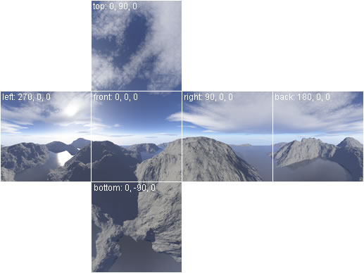
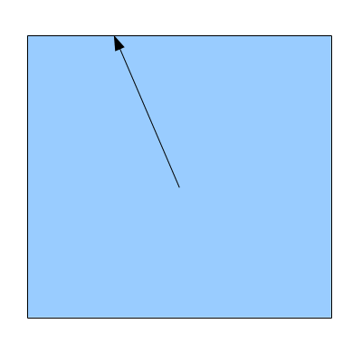

Background
A skybox is a technique that makes the scene looks bigger and more impressive by wrapping the viewer with a texture that goes around the camera 360 degrees. The texture is often a combination between the sky and a terrain type such as mountains, skyscapers, etc. As the player explores his surroundings he keeps seeing a part of the skybox hovering above the real models and filling up all those empty pixels. Here's an example of a skybox from the game Half-Life:

The idea behind the skybox is to render a big cube and place the viewer at its center. As the camera moves the cube follows it so that the viewer can never reach the "horizon" of the scene. This is similar to real life where we see the sky "touch" the earth on the horizon but when we move toward the horizon it remains at the same distance from us (pending on land type, etc).
A special type of texture is mapped on the cube. This texture is created in such a way that if it is cut and folded properly it creates a box where the contents along the edges of the internal faces are perfectly aligned with one another and create a sense of continuity for someone who is located inside the box. For example, see the following texture:
If we cut away the white margins of the texture above and fold the remaining parts along the white lines we will get a box with the required properties. OpenGL calls such a texture a Cubemap.
In order to sample from the cubemap we will use a 3D texture coordinate instead of the 2D coordinate that we have been using thus far. The texture sampler will use this 3D coordinate as a vector and will first find out which of the six faces of the cubemap contains the required texel and then fetch it from within that face. This process can be seen in the following picture which is taken from above (looking down at the box):
The proper face is selected based on the highest magnitude component of the texture coordinate. In the above example we see that Z has the largest magnitude (Y cannot be seen but let's assume it is smaller than Z). Since Z has a positive sign the texture sampler will use the face entitled 'PosZ' and will fetch the texel from there (the remaining faces are 'NegZ', 'PosX', 'NegX', 'PosY' and 'NegY').
The skybox technique can actually be implemented using a sphere as well as a box. The only difference is that the length of all possible direction vectors in a sphere is equal (since they represent the radius of the sphere) while in a box there are different lengths. The mechanism for texel fetching remains the same. A skybox which uses a sphere is sometimes called a skydome. This is what we will use for the demo of this tutorial. You should play with both options and see what works best for you.
Source walkthru
(ogldev_cubemap_texture.h:28)
class CubemapTexture
{
public:
CubemapTexture(const string& Directory,
const string& PosXFilename,
const string& NegXFilename,
const string& PosYFilename,
const string& NegYFilename,
const string& PosZFilename,
const string& NegZFilename);
~CubemapTexture();
bool Load();
void Bind(GLenum TextureUnit);
private:
string m_fileNames[6];
GLuint m_textureObj;
};
This class wraps the OpenGL implementation of the cubemap texture and provides a simple interface to load and use the cubemap. The constructor takes a directory and six filenames of image files that contain the cubemap faces. For simplicity we assume that all files exist in the same directory. We need to call the function Load() once during startup in order to load the image files and create the OpenGL texture object. The attributes of the class are the image filenames (stored with the full path this time) and the OpenGL texture object handle. This single handle provides access to all six faces of the cubemap. During runtime Bind() must be called with the proper texture unit in order to make the cubemap available to the shader.
(cubemap_texture.cpp:60)
bool CubemapTexture::Load()
{
glGenTextures(1, &m_textureObj);
glBindTexture(GL_TEXTURE_CUBE_MAP, m_textureObj);
Magick::Image* pImage = NULL;
Magick::Blob blob;
for (unsigned int i = 0 ; i < ARRAY_SIZE_IN_ELEMENTS(types) ; i++) {
pImage = new Magick::Image(m_fileNames[i]);
try {
pImage->write(&blob, "RGBA");
}
catch (Magick::Error& Error) {
cout << "Error loading texture '" << m_fileNames[i] << "': " << Error.what() << endl;
delete pImage;
return false;
}
glTexImage2D(types[i], 0, GL_RGB, pImage->columns(), pImage->rows(), 0, GL_RGBA,
GL_UNSIGNED_BYTE, blob.data());
glTexParameteri(GL_TEXTURE_CUBE_MAP, GL_TEXTURE_MAG_FILTER, GL_LINEAR);
glTexParameteri(GL_TEXTURE_CUBE_MAP, GL_TEXTURE_MIN_FILTER, GL_LINEAR);
glTexParameteri(GL_TEXTURE_CUBE_MAP, GL_TEXTURE_WRAP_S, GL_CLAMP_TO_EDGE);
glTexParameteri(GL_TEXTURE_CUBE_MAP, GL_TEXTURE_WRAP_T, GL_CLAMP_TO_EDGE);
glTexParameteri(GL_TEXTURE_CUBE_MAP, GL_TEXTURE_WRAP_R, GL_CLAMP_TO_EDGE);
delete pImage;
}
return true;
}
The function that loads the cubemap texture starts by generating a texture object. This object is bound to the special GL_TEXTURE_CUBE_MAP target. After that we loop over the 'types' array which contains the GL enums that represent the cubemap faces (GL_TEXTURE_CUBE_MAP_POSITIVE_X, GL_TEXTURE_CUBE_MAP_NEGATIVE_X, etc). These enums match the attribute string vector 'm_fileNames' which simplifies the loop. The image files are loaded one by one by ImageMagick and then specified to OpenGL using glTexImage2D(). Note that each call to this function is done using the proper GL enum for that face (which is why the 'types' array and 'm_fileNames' must match). After the cubemap is loaded and populated we setup some configuration flags. You should be familiar with all these flags except GL_TEXTURE_WRAP_R. This enum simply refers to the third dimension of the texture coordinate. We set it to the same clamping mode as the other dimensions.
(cubemap_texture.cpp:95)
void CubemapTexture::Bind(GLenum TextureUnit)
{
glActiveTexture(TextureUnit);
glBindTexture(GL_TEXTURE_CUBE_MAP, m_textureObj);
}
This function must be called before the texture can be used for drawing the skybox. The target for the bind function is GL_TEXTURE_CUBE_MAP which is the same enum we used in the Load() function.
(skybox_technique.h:25)
class SkyboxTechnique : public Technique {
public:
SkyboxTechnique();
virtual bool Init();
void SetWVP(const Matrix4f& WVP);
void SetTextureUnit(unsigned int TextureUnit);
private:
GLuint m_WVPLocation;
GLuint m_textureLocation;
};
The skybox is rendered using its own special technique. This technique has only a couple of attributes that the caller must specify - a WVP matrix to transform the box or the sphere and a texture to map on it. Let's see the internals of this class.
(skybox.vs)
#version 330
layout (location = 0) in vec3 Position;
uniform mat4 gWVP;
out vec3 TexCoord0;
void main()
{
vec4 WVP_Pos = gWVP * vec4(Position, 1.0);
gl_Position = WVP_Pos.xyww;
TexCoord0 = Position;
}
This is the vertex shader of the skybox technique. It's actually quite simple but you must be aware of a couple of tricks. The first trick is that we transform the incoming position vector using the WVP matrix as always, but in the vector that goes to the fragment shader we override the Z component with the W component. What happens here is that after the vertex shader is complete the rasterizer takes gl_Position vector and performs perspective divide (division by W) in order to complete the projection. When we set Z to W we guarantee that the final Z value of the position will be 1.0. This Z value is always mapped to the far Z. This means that the skybox will always fail the depth test against the other models in the scene. That way the skybox will only take up the background left between the models and everything else will be infront of it, which is exactly what we expect from it.
The second trick here is that we use the original position in object space as the 3D texture coordinate. This makes sense because the way sampling from the cubemap works is by shooting a vector from the origin through a point in the box or sphere. So the position of the point actually becomes the texture coordinate. The vertex shader passes the object space coordinate of each vertex as the texture coordinate (8 vertices in the case of a cube and probably much more for a sphere) and it gets interpolated by the rasterizer for each pixel. This gives us the position of the pixel which we can use for sampling.
(skybox.fs)
#version 330
in vec3 TexCoord0;
out vec4 FragColor;
uniform samplerCube gCubemapTexture;
void main()
{
FragColor = texture(gCubemapTexture, TexCoord0);
}
The fragment shader is extremely simple. The only thing worth noting here is that we use a 'samplerCube' rather than a 'sampler2D' in order to access the cubemap.
(skybox.h:27)
class SkyBox
{
public:
SkyBox(const Camera* pCamera, const PersProjInfo& p);
~SkyBox();
bool Init(const string& Directory,
const string& PosXFilename,
const string& NegXFilename,
const string& PosYFilename,
const string& NegYFilename,
const string& PosZFilename,
const string& NegZFilename);
void Render();
private:
SkyboxTechnique* m_pSkyboxTechnique;
const Camera* m_pCamera;
CubemapTexture* m_pCubemapTex;
Mesh* m_pMesh;
PersProjInfo m_persProjInfo;
};
Rendering of the skybox involves several components - a technique, a cubemap texture and a box or sphere model. To simplify its usage this class is suggested as a solution that brings all these components under the same roof. It is initialized once during startup with the directory and filenames of the cubemap texture and then used during runtime by calling Render(). A single function call takes care of everything. Note that in addition to the above components the class also have access to the camera and the perspective projection values (FOV, Z and screen dimensions). This is so that it can populate the Pipeline class properly.
void SkyBox::Render()
{
m_pSkyboxTechnique->Enable();
GLint OldCullFaceMode;
glGetIntegerv(GL_CULL_FACE_MODE, &OldCullFaceMode);
GLint OldDepthFuncMode;
glGetIntegerv(GL_DEPTH_FUNC, &OldDepthFuncMode);
glCullFace(GL_FRONT);
glDepthFunc(GL_LEQUAL);
Pipeline p;
p.Scale(20.0f, 20.0f, 20.0f);
p.Rotate(0.0f, 0.0f, 0.0f);
p.WorldPos(m_pCamera->GetPos().x, m_pCamera->GetPos().y, m_pCamera->GetPos().z);
p.SetCamera(m_pCamera->GetPos(), m_pCamera->GetTarget(), m_pCamera->GetUp());
p.SetPerspectiveProj(m_persProjInfo);
m_pSkyboxTechnique->SetWVP(p.GetWVPTrans());
m_pCubemapTex->Bind(GL_TEXTURE0);
m_pMesh->Render();
glCullFace(OldCullFaceMode);
glDepthFunc(OldDepthFuncMode);
}
This function takes care of rendering the skybox. We start by enabling the skybox technique. Then a new OpenGL API is introduced - glGetIntegerv(). This function returns the state of OpenGL for the enum specified as the first parameter. The second parameter is the address of an array of integers that receives the state (in our case only a single integer is enough). We must use the proper Get* function according to the type of the state - glGetIntegerv(), glGetBooleanv(), glGetInteger64v(), glGetFloatv() and glGetDoublev(). The reason why glGetIntegerv() is used here is because we are going to change a couple of common state values that are usually set in glut_backend.cpp in all of the tutorials. We want to do that in a way which is transparent to the other parts of the code and one solution is to retrieve the current status, make the proper changes and finally restore the original state. That way the rest of the system doesn't need to know that something was changed.
The first thing that we change is the culling mode. Usually, we want to cull the triangles that are facing away from the camera. However, in the case of a skybox the camera is placed inside of a box so we want to see their front, rather than their back. The problem is that in the generic sphere model which is used here the external triangles are considered front facing while the internal are backfacing (this is a dependency on the order of the vertices). We can either change the model or reverse the culling state of OpenGL. The later solution is preferable so that the same sphere model can remain generic and usable for other cases. Therefore, we tell OpenGL to cull front facing triangles.
The second thing that we change is the depth test function. By default, we tell OpenGL that an incoming fragment wins the depth test if its Z value is less than the stored one. However, in the case of a skybox the Z value is always the far Z (see above). The far Z is clipped when the depth test function is set to "less than". To make it part of the scene we change the depth function to "less than or equal".
The next thing this function does is to calculate the WVP matrix. Note that the world position of the skybox is set at the camera. This will keep the camera at its center the whole time. After that the cubemap texture is bound to texture unit 0 (this texture unit was also configured in SkyboxTechnique when it was created in SkyBox::Init()). Then the sphere mesh is rendered. Finally, the original cull mode and depth function are restored.
An interesting performance tip is to always render the skybox last (after all the other models). The reason is that we know that it will always be behind the other objects in the scene. Some GPUs have optimization mechanisms that allow them to do an early depth test and discard a fragment if it fails the test without executing the fragment shader. This is especially helpful in the case of the skybox because then the fragment shader will only run for the pixel encompasing the "background" of the scene and not the ones that are covered by the other models. But to make it happen we must get the depth buffer populated with all the Z values so that by the time the skybox is rendered all the information is already there.